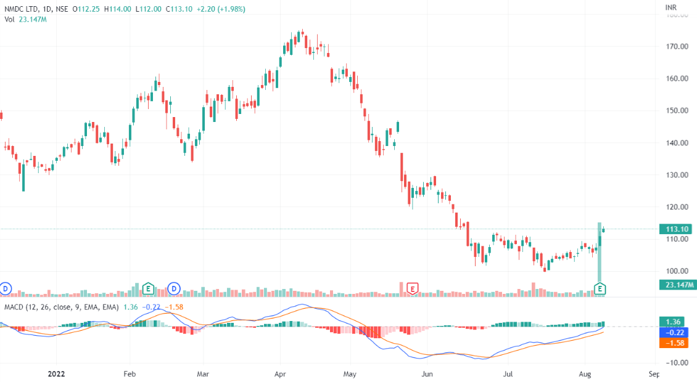
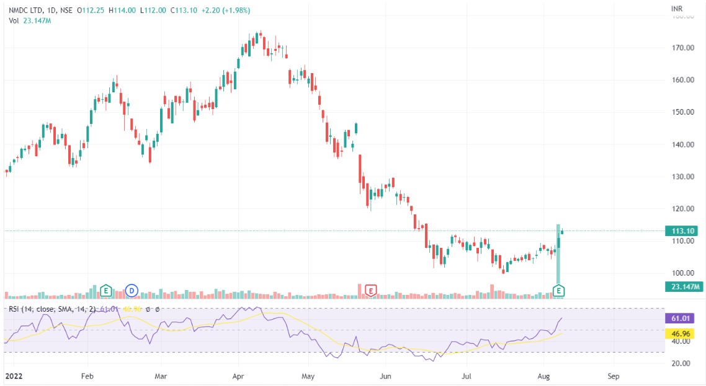
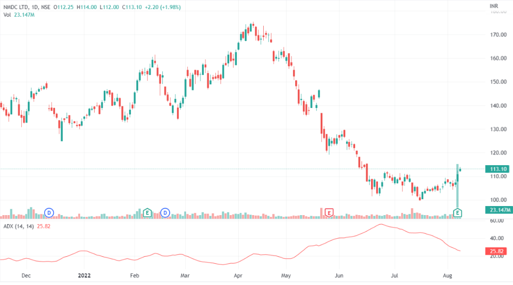
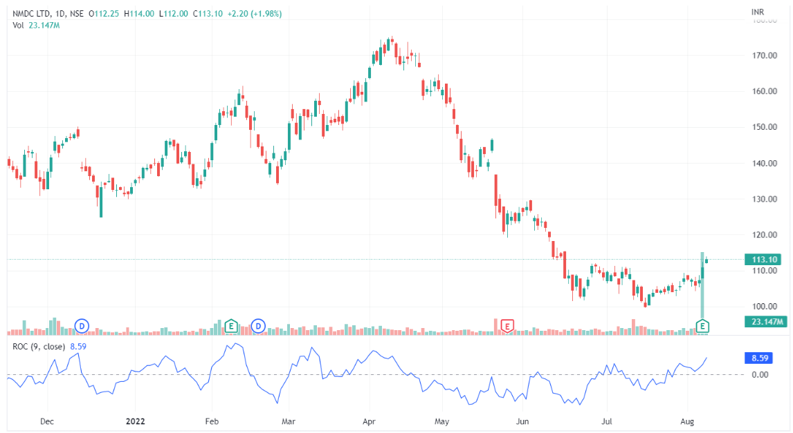

MACD is a momentum indicator which shows the relationship between the two moving averages
The buying signal is generated by MACD when the MACD line crosses the signal line from below, and the selling signal is generated when the MACD line crosses the signal line from above
The Relative Strength Index (RSI) is another popular momentum indicator that acts as a metric for price changes and the speed at which they change for a particular period.
The Average Directional Index (ADX) created by Welles Wilder established the Directional Movement System, which consists of the ADX, the Minus Directional Indicator (-DI), and the Plus Directional Indicator (+DI). These indicators as a group are used to help measure both the momentum and the direction of price movements.
The rate of change is the speed at which the price changes over time. This indicator is expressed as a ratio between a change in one variable relative to the change in another. A stock with high momentum has a positive ROC, whereas a low momentum stock has a negative ROC and is likely to decline in value, indicating a sell signal.
